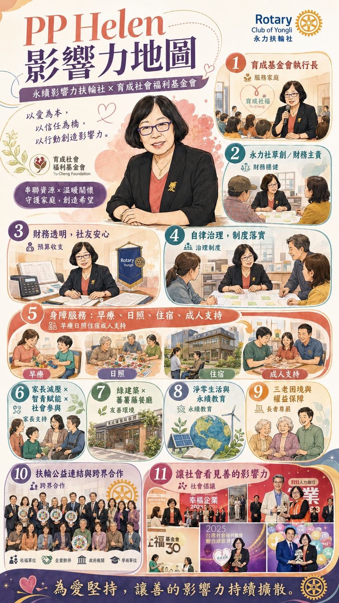

賴光蘭女士，現任財團法人育成社會福利基金會常務董事兼執行長。她擁有美國費城聖若瑟大學（St. Joseph's University）特殊教育碩士學位，並曾擔任臺北市永明發展中心主任、臺北市私立育成裕民發展中心主任等重要職務。
然而，她的影響力起點，並非來自頭銜，而是來自一個母親的身分。
身為唐氏症孩子的家長，她在美國求學期間即深刻思考：當父母老去之後，身心障礙者的未來在哪裡？
2001 年返台後，她投身身心障礙議題倡議與照顧服務，並成為育成基金會創始會員之一。多年來，她不僅建立服務體系，更建構出一種制度性安全網，讓身心障礙者與其家庭能安心生活。
許多家長面臨「三老困境」——老父母、老子女、老照顧者交織而成的焦慮。那份「擔心自己比孩子早走」的恐懼，是她深刻理解的生命課題。
她的公益行動，從來不是慈善式的施予，而是制度型的回應。
育成基金會員工近千人，其中超過半數為中高齡族群。在多數組織視「年齡」為成本時，賴光蘭卻將中高齡視為穩定資產。
她指出，服務心智障礙者的組織，最怕的是人員頻繁流動，因為服務對象習慣熟悉的人際關係，一旦更替，情緒與學習都會受到影響。
穩定，並不是保守。穩定，是一種對弱勢者負責的選擇。
在永力社，她擔任財務職務與理事。這樣的角色，容易被低估。但事實上，財務治理是組織透明與信任的根基。
她的風格是——
「做好自律治理，外在他律就不會成為負擔。」
這樣的信念，使永力社的財務制度清楚、公開、可追溯。對非財務背景的社友而言，這是一種安心感。在影響力管理架構中，這屬於 Governance（治理）層面的關鍵支柱。沒有財務透明，永續不可能成立。
她的代表性事件，並不是一筆財務改革，而是一個空間決定。
育成基金會重新整修庇護餐廳時，新設置了會議室空間。她主動提供該會議室，作為永力社未來例會的會場。
這看似單純的場地借用，實際上意義深遠：
她用一個決定，把社團與公益現場連結起來。
她強調主管示範的重要性，透過開放討論形成互信文化。這種領導方式，不是強勢，而是包容。
在育成：不競爭、不搶功；青壯銀共融；專業被尊重。
心理安全的職場——而心理安全，是服務型組織最重要的永續條件。
她的專業背景是特殊教育。這意味著她理解：差異、節奏、耐心、陪伴。
這些特質，也轉化為她的治理風格。她不急功近利。她重視長期佈局。她相信「人」比「制度」重要，但也知道沒有制度，人撐不久。
她是那種——不甘於只做一件好事，而要讓好事持續發生的人。
她的影響力橫跨三構面，但核心始終一致：讓脆弱的人有依靠。
在永力社裡，她不是舞台中央的人。她是讓舞台穩定的人。
若沒有她，永續影響力社團可能熱鬧，卻未必長久。
她的一生，從母親出發。從特殊教育走向制度治理。從家庭焦慮走向社會倡議。
她證明了一件事：
真正的愛，不只是付出，而是建立能長久存在的結構。
她的影響力，不喧嘩。但極為深遠。